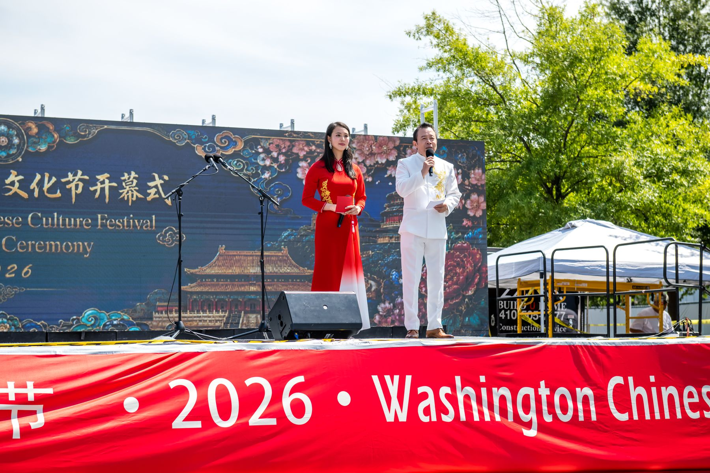
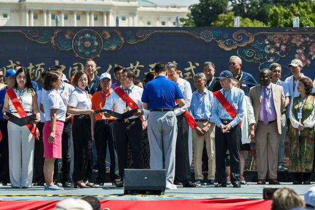
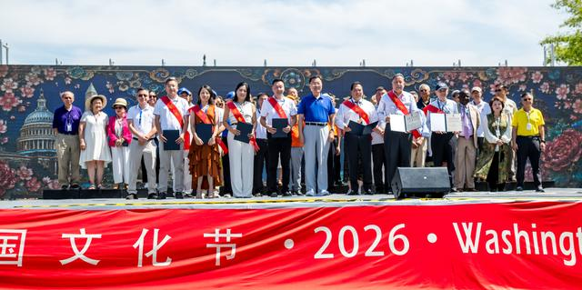
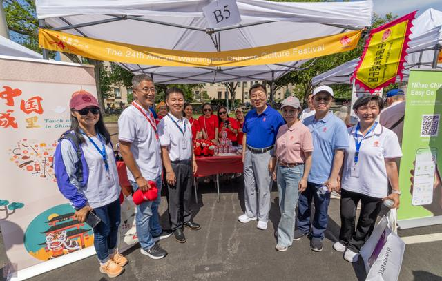
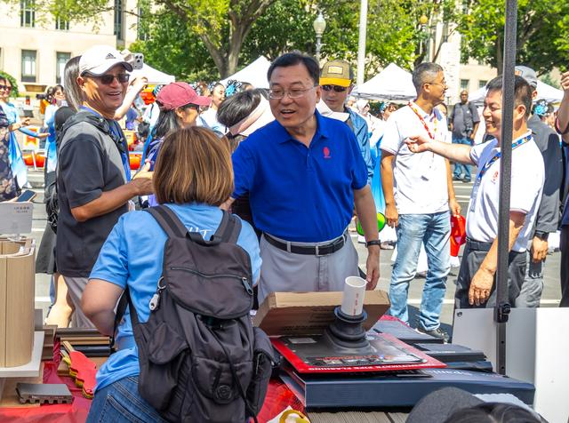
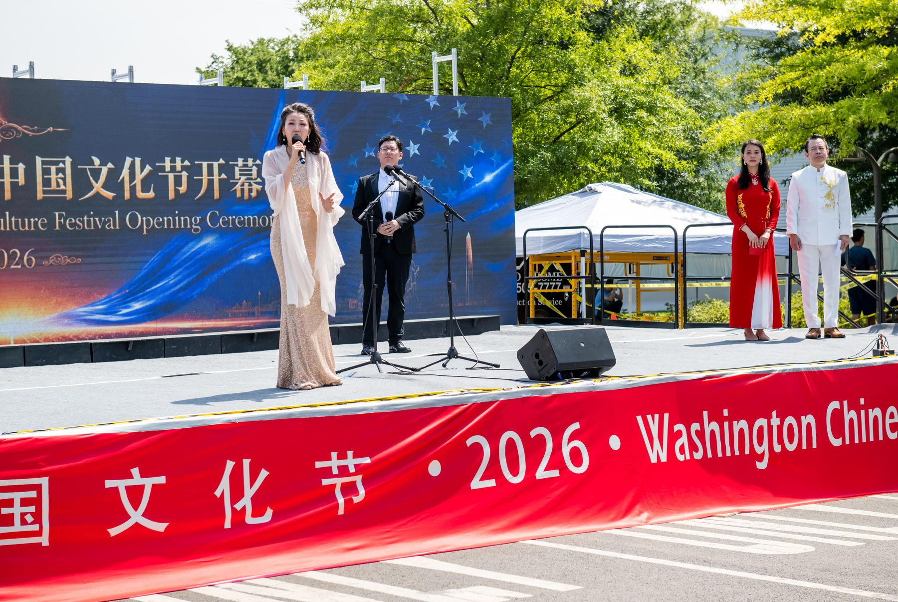

Past Festivals
往届回顾Highlights of Past Festivals

2025年8月30日，第二十三届华盛顿中国文化节在华盛顿国会山宾夕法尼亚大道（第三街至第四街）隆重举行。文化节得到大华府地区两百多家侨团的支持，美国知名美食平台 Yelp 作为合作伙伴参与本土推广，上海东方卫视全程直播。本届文化节得到了中国贵州、陕西、上海、武汉、北京、深圳等地的大力支持，共设80多个展棚，其中包括20家中华美食摊位、近40个文化展示展棚及多家赞助商展位，吸引数万名民众驻足“打卡”，现场气氛热烈、欢快。
On August 30, 2025, the 23rd Washington Chinese Culture Festival was grandly held on Pennsylvania Avenue (between 3rd and 4th Streets) at Capitol Hill. Supported by more than 200 local Chinese associations, the festival partnered with Yelp to promote the event locally, and was broadcast live by Shanghai Dragon Television (SMG Oriental TV). With strong support from Guizhou, Shaanxi, Shanghai, Wuhan, Beijing and Shenzhen, it featured over 80 booths, including 20 Chinese food vendors, nearly 40 cultural exhibition booths and several sponsor displays, attracting tens of thousands of visitors.
第二十四届文化节已于2026年8月29日在同一地点圆满举办。以下照片均由第二十四届文化节摄影组拍摄。
The 24th festival took place on August 29, 2026 at the same location. Photos on this site were taken by the 24th festival’s photography team.





嘉宾与贺信Distinguished Guests and Messages
华盛顿中国文化节活动得到了中美两国政要的高度重视。中国前国家主席江泽民、美国前总统克林顿、布什、拜登及多位国会议员、州长曾发来贺信。马里兰州、华盛顿特区与弗吉尼亚州的政要多次亲临现场。第二十三届文化节期间，华盛顿 D.C. 市长、马里兰州州长和十位美国现任国会议员发来贺信和嘉奖令。
The festival has received high recognition from political leaders in both China and the United States. Former Chinese President Jiang Zemin and former U.S. Presidents Bill Clinton, George W. Bush and Joe Biden, along with numerous members of Congress and state governors, have sent congratulatory letters. Leaders from Maryland, Washington, D.C. and Virginia have attended in person on many occasions. For the 23rd festival, the Mayor of Washington, D.C., the Governor of Maryland and ten sitting members of the U.S. Congress sent letters or official citations.
第二十五届开幕式嘉宾：25th opening ceremony guests: 待公布TBA

开幕式 · 第二十四届（2026）Opening ceremony · 24th festival (2026)